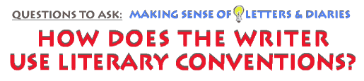

This is an archived copy of History Matters, provided by the Roy Rosenzweig Center for History and New Media. To explore this content in a new interface, visit Who Built America?.

|
|
 Considering events and relationships as the substance of both diaries and letters thus helps us explore more specifically how both kinds of texts are built from a kind of writerly tension between the chosen form (letter or diary) and the way each individual writer is able to "bend" the form to serve his purposes. The form adopted by the writer allows him to draw on tradition and inventiveness both — to speak not as an isolated individual but as a dutiful or loving correspondent, as a perceptive or incisive or ironic diarist. Using the form, then, the writer takes on a social identity and speaks with the particular authority or emotional intensity conferred by embracing the form as his own. Consider the way Abream Scriven, an African American man living in bondage in Georgia, began a letter to his wife in 1858: "Dinah Jones My Dear wife I take the pleasure of writing you these few [lines] with much regret to inform you that I have been sold....I am here yet but I expect to go before long." At first, Scriven’s "pleasure" at telling his wife such bad news seems paradoxical. On second look, though, it is clear that Scriven was not voicing his personal happiness, but relying on a letter’s conventional opening phrase to give appropriate substance to what he had to say. The phrase "I take the pleasure" cushions the bad news, but just as importantly it gives the news the weight it deserves.* At the same time, most writers have an irrepressible urge to express themselves beyond the limits of any given form, fitting the form to their own intentions, arguments, or mood as they struggle to give expression to the relationships and events of their lives. A young man named Campbell Bryce, courting Sarah Henry in 1840, after writing many classic courtship letters to her filled with "elevated" thoughts and verse, at last attempted to break out of the form, which he began to see as forcing him to "labour too much in attempting to write faultlessly." He urged them both to find instead "an easy style [which] can only be attained by ease and freedom of thought." Diarists, too, pushed the limits of the diary form, though not without worries. Beatrice Webb experimented with giving her thoughts free rein in her diary in the 1880s, and yet she backed away from saying certain things, comparing unwelcome thoughts to a "ruffianly-looking vagrant" who should not be allowed into her pages. To "dwell on" certain kinds of thoughts, "even with disapproval," she decided, "might give [them] an ugly significance." In any case, the historian’s strategy in reading is to keep in mind that writers constantly bend the expressive forms which both entitle them to speak and think, but also impose subtle limits.* In the main, then, letters may generally be seen as a less elastic form of expression than diaries because more open to judgment from readers; letter-writers often apologize for a "poor letter," whereas diarists are not so tied to acknowledging "good" form (though many become frustrated the limits of all written language to express what "really" needs saying). By the same token, because diaries permit writers to go more deeply into events and relationships, they have a greater potential than letters both to reveal and conceal more about the writer’s self and world. There is more potential for insight, but also more potential for puzzlement and obscurity — theirs and ours. With these things in mind, the historian’s task is to follow the interpretive path opened up by the creative tension between form and using the form.
Here are
two examples from a typical letter-writing manual from the mid-nineteenth
century, which gave general instructions about the importance of correct
letter-writing and included model letters. Manuals of this type were
quite popular and issued in numerous editions, and parents and school
teachers also reinforced the kind of writing advice offered in them.
Read and roll your cursor over these two letters from Campbell Bryce to his sweetheart Sarah Henry and consider how they do and do not conform to the advice manual’s model, and how Bryce negotiates the tension between using natural language and conveying the seriousness of his purpose.
|
||||||

|
|||||||